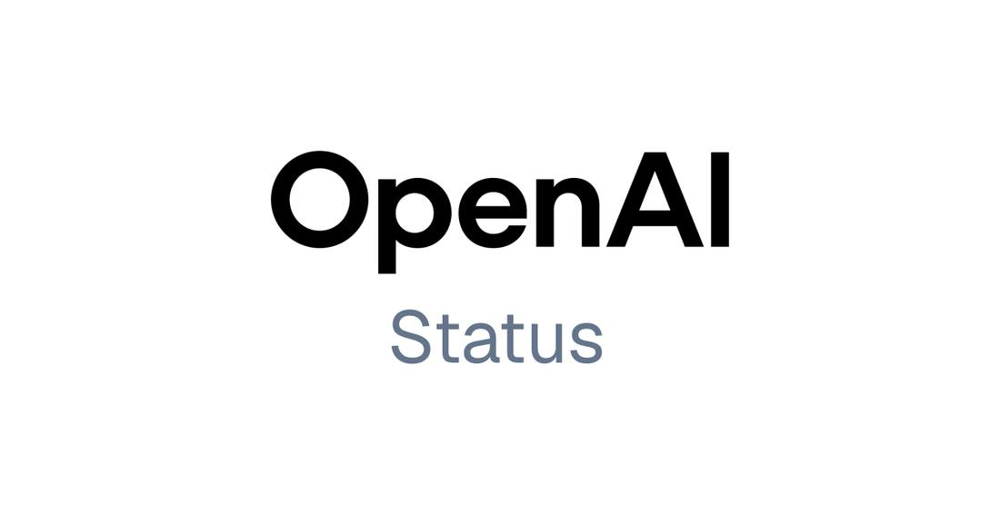
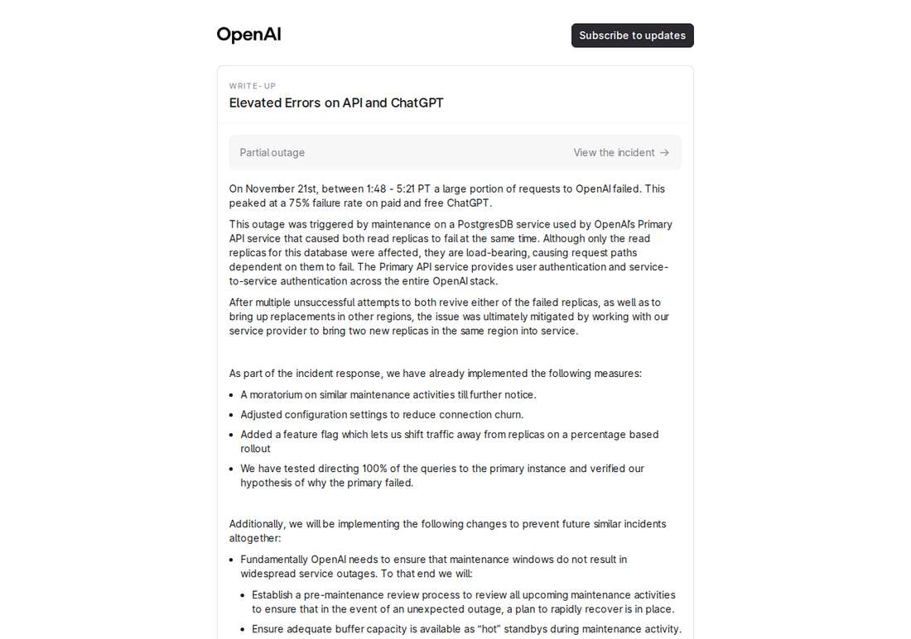

OpenAI: Routine Database Work Took Down 75% of ChatGPT Requests for 211 Minutes
Routine Postgres maintenance crashed both auth-database replicas on November 21, failing up to 75% of ChatGPT and API requests for 211 minutes.

- 01THE TRIGGER — November 21, 1:48 p.m. PT: scheduled maintenance on a PostgresDB service begins; both read replicas fail at once.
- 02THE OUTAGE — Afternoon: failure rates peak at 75% across ChatGPT and the API; replica revival and replacement attempts fail.
- 03THE RECOVERY — November 21, 5:21 p.m. PT: two new replicas enter service in the same region; errors end; systems normal by evening.
WHAT HAPPENEDWhat Happened
On November 21, 2026, between 1:48 and 5:21 p.m. Pacific time, a large portion of requests to OpenAI failed, peaking at a 75% failure rate on paid and free ChatGPT, according to a post-incident write-up OpenAI published on its status page the same day. The outage lasted 211 minutes, and all systems were operating normally again by Saturday evening.
The trigger, in OpenAI's own words, was scheduled maintenance on a PostgresDB service used by its Primary API service, which handles authentication across the entire OpenAI stack. The maintenance caused both of the database's read replicas to fail at the same time. Although only the read replicas were affected, OpenAI said they are load-bearing, so every request path that depended on them failed even though the primary database was not affected.
The failure was wide. On the API side it swept across Chat Completions, Fine-tuning, Embeddings, Images, Batch, Audio, Moderations, Realtime and the Files endpoint. Inside ChatGPT it hit Conversations, Login, Search, file uploads and Voice mode, leaving users unable to sign in or load conversations. Repeated attempts to revive either failed replica and to start replacements in other regions failed, and the outage was ultimately mitigated by working with OpenAI's service provider to bring two new replicas into service in the same region.
WHY IT MATTERSOne maintenance job reached everything
The shape of the failure is the story. A single Postgres maintenance job on one database service took down authentication for the whole platform because the Primary API service sits in front of every product OpenAI runs, and the replicas behind it were load-bearing rather than spare. The primary database never failed, yet requests failed anyway, because the paths that needed the replicas could not fall back. OpenAI later confirmed its diagnosis by directing 100% of queries to the primary instance, proving the replicas, not the primary, were the problem. Redundancy existed on paper, two replicas, and both failed in the same window, which is the definition of a correlated failure.
The incident lands as a reminder that single-provider agent stacks inherit their provider's worst day. OpenAI's own framing concedes the point: "We know that extended API outages affect our customers' products and business, and outages of this magnitude are particularly damaging. While we came up short here, we are committed to preventing such incidents in the future." The outage came in the same week OpenAI reported third-quarter revenue of $10 billion and signed a deal for 26 million of Google's tensor processing units by 2028, a reminder that the company's scale is growing faster than the margin for error in its plumbing.
WHAT TO WATCHWhat OpenAI changed, and what is still to come
OpenAI has already put a moratorium on similar maintenance until further notice, adjusted configuration settings to reduce connection churn, and shipped a feature flag that shifts traffic away from replicas on a percentage basis. It has also tested directing all queries to the primary instance, which would keep the service running if the replicas failed again. Those are fast, reversible fixes; the structural ones are still ahead.
Watch whether the promised pre-maintenance review process materializes, with every upcoming job checked in advance and a rapid recovery plan in place before work begins. OpenAI also plans to keep spare capacity as hot standbys during maintenance, hold buffer capacity in the regions where critical services are hosted, build a faster way of recovering from replica lag in the short term, and make architectural changes to eliminate the factor in the long term, alongside a review of its entire infrastructure stack for more redundancy and fail-safe measures. OpenAI has given no date for the review process or the wider redundancy work, and no date for lifting the moratorium. The next maintenance window, and whether it passes quietly, is the first real test.
THE SHIFTWhat Changed
SIGNAL JUDGMENT — ANALYSISOpenAI Explains the Outage That Failed 75% of ChatGPT Requests
Tokenta Signal's judgment: The postmortem is unusually candid about an unglamorous cause, and that candor is the point. No attack, no surge, no exotic failure: a routine maintenance job on one database service, two replicas failing together, and an authentication layer that every product depends on. The fix list is credible as far as it goes, a moratorium, a traffic-shifting flag, a tested fallback to the primary, but the structural promises, pre-maintenance review, hot standbys, replica-lag recovery, a full-stack redundancy review, have no dates attached. The outage is a useful stress test for anyone building on a single provider: the question is not whether the provider fails, but whether your stack notices gracefully when it does.
WHAT REMAINS UNCERTAINWhat Remains Uncertain
EVIDENCEEvidence

OpenAI's status page write-up says routine maintenance on a Postgres database service caused both read replicas behind its authentication layer to fail at once on November 21, 2026, driving failure rates to 75% across ChatGPT and the API for 211 minutes.
PRIMARY SOURCESPrimary Sources
- OpenAI Status: Elevated Errors on API and ChatGPT, write-up
https://status.openai.com/incidents/01JMYB602A6H2E04Y1497J434X/write-up - The Apex Wire: ChatGPT Outage November 21: Why 75% of Requests Failed for 3.5 Hours
https://theapexwire.com/ai/openai-chatgpt-outage-nov21-postgres-failure/
RELATEDRelated Intelligence
- Trump Says He Convinced Nvidia's Board to Bring Back Huang; the Stock Posts Its Best Day Since 2003
- US Puts Megaspeed on the Entity List, Cutting Off the Firm at the Center of the Nvidia Scandal
- Vercel Launches Audited ZDR on AI Gateway, Turning Zero-Retention Claims Into Checkable Audits
- Anthropic Opens Zero-Retention Enterprise Safeguards in Public Beta